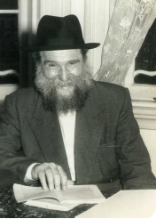
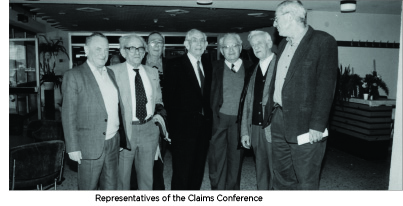

Enlist All of Anash!
From the life of R’ Yehoshua Shneur Zalman Serebryanski a”h

R’ Zalman complained that most of the farbrengen was quiet. Aside from a few stories told by R’ Betzalel Wilschansky, and reviewing the maamer “Basi L’Gani,” R’ Isser Kluvgant read some excerpts from a book about the Rebbe Rayatz’s activities. The rest of the farbrengen was quiet.
R’ Zalman was bothered about there not being a Chassidishe personality who could farbreng properly and inspire the crowd. “This is most painful, but what can we do? We have no one to fill the role of mashpia and farbreng with Anash and the rest of those who are shayach to a farbrengen. May Hashem have mercy and send a Chassidishe young man and then everything will be rectified, with Hashem’s help.”
HOW CAN YOU COMPARE BUFFALO TO MELBOURNE?
In the Rebbe’s letter mentioned above, it also mentioned that R’ Yitzchok Dovid Groner had already returned to the United States from his long visit to Australia. He conveyed to the Rebbe some brief impressions of his visit and was supposed to follow up with a detailed report.
R’ Zalman spoke at length with R’ Groner when he was in Melbourne and had complained to him about the spiritual neglect in Australia and the need to bring additional Chassidim, talmidei chachomim as well as askanim, in order to build up the yeshiva and the community. R’ Groner said he did not think R’ Zalman had anything to complain about. Relative to the spiritual situation in his city of Buffalo, the community in Melbourne was quite settled.
Therefore, R’ Zalman was worried that when the Rebbe would hear R’ Groner’s description about the “terrific spiritual state” of Chabad in Melbourne, that would close the door on his dream that the Rebbe would send a Chassid to Melbourne who could improve matters.
In his letter of 25 Shvat he wanted to preempt this. He wrote that it was certainly good that R’ Groner was reporting to the Rebbe about his impressions of the community in Melbourne, but in one matter he differed with R’ Groner. The latter compared Melbourne to Buffalo and thought the spiritual situation in Melbourne was practically like Yerushalayim compared to Buffalo. He was mistaken in this because:
1-Anash in Melbourne worked hard to make money and were busy. They were unable to go to Beis Chayeinu and get spiritually replenished. How could they be compared to Anash in Buffalo who could drive to New York and get encouragement and chayus from the Rebbe? To Anash in Australia, 770 was at the other end of the world.
2-As far as potential, Melbourne had a very large Jewish community and there was a good possibility of attracting hundreds of children to the Chabad school. All of Australia was a spiritual desert and the blossoming of Jewish life in Melbourne would affect the entire continent!
It was important, continued R’ Zalman, to have a talented menahel running the mosad and a rosh yeshiva who was suited both in his scholarship and his Chassidic comportment. Especially now, when an elementary school was opening and the yeshiva was receiving positive publicity in the Jewish community, it was important to raise the level of the education, in Nigleh and Chassidus, as well as the educational approach. All this demanded a capable person. “Because we, aside from not being shayach to this, are also extremely busy with work and we don’t have time for this.”
R’ Zalman wrote similarly in an earlier letter that was sent on 14 Shvat:
“We greatly feel the lack of an outstanding rosh yeshiva, a lamdan and Chassid, because during vacation and every Shabbos and Sunday night, older students come who learn in high schools. Also, our young ones are growing up and need the influence of a lamdan and Chassid. Then many talmidim would be drawn to the yeshiva and they would cleave to the light of Chassidus. And in general, a mosad that numbers, bli ayin ha’ra, close to a hundred talmidim, and with Hashem’s help we can hope that there will be many more, needs at its head a distinguished person, a lamdan and a Chassid … because this is still virgin territory and if we had the right man it would be possible, with Hashem’s help, that all the influence over the country would be from the yeshiva.
“As of now, I am busy teaching the young ones, my students in school and with the class that comes in the evening after school. The rest of the hours of the day are spent with all the rest of the matters that pertain to the yeshiva, money matters, the preschool and the school, maintaining the building and the yard, etc. Each item requires time and work, especially regarding the quality of the learning and the guidance, such that an expert, supervisory eye is needed here. Aside from my not being suited to this, I also do not have enough time for all these things. Although we saw and see hashgacha pratis as well as miracles and we are certain that Hashem will help us in the future in all respects, my responsibility is to inform the Rebbe of the situation.”
THE REBBE: YOU WERE GIVEN THE KOCHOS
In response to R’ Zalman’s letter, the Rebbe wrote on 8 Adar 5715 that he was pleased to read that they also see the development of the yeshiva. As far as lacking a mashpia, the Rebbe said that if people reckoned with what was missing, he wonders whether anyone would ever work at anything because there is no perfection except Above.
Then the Rebbe reiterated that since hashgacha brought them there, surely they were given the kochos required for that place and that time. They just had to make use of it to the fullest extent. They were to mobilize all of Anash and have them not only participate in the yeshiva but add to this from time to time, because in matters of holiness you grow.
SUPPORT FROM THE JOINT

The Claims Conference met in Paris once a year where they decided where the money would be given. R’ Binyomin Gorodetzky, director of the European Lubavitch office, was on good terms with the representatives of the Jewish organizations on the Conference. After presenting the tremendous work of Lubavitch around the world, he was able to obtain some of the money for Chabad mosdos in communities of Holocaust survivors.
As mentioned in earlier chapters, the yeshiva had received $2000 from the Joint the prior year, after they had submitted a request for support for the yeshiva in Melbourne, as per the Rebbe’s instructions. Before the meeting of the Claims Conference in 5715, R’ Zalman submitted to the chairman of the Jewish Board of Deputies in Melbourne an official request that the yeshiva be given part of the budget allocated to the Jewish mosdos of Australia.
In those days, the Jewish Board of Deputies was the official representative in all dealings with the government and with the international Jewish organizations that provided financial support to Jewish communities abroad. The JBD was comprised of two factions, a Zionist faction and a Bund faction (the latter was comprised of Jewish workers, was founded in Russia and Poland, and was a secular ideology which opposed traditional Jewish life). These two factions monopolized the great resources of the Jewish community. The Zionist party ran the big Jewish school with 3000 students, while the Bund party ran the senior citizen home of the community. These two factions controlled all the money received from Jewish communities abroad.
Orthodox Jews, who were only one tenth of the Jewish community at that time, did not have a representative on the JBD. Of course Chabad, which was a very tiny group, did not a representative. Actually, they did not want to be members of this organization, since that would mean they would have to follow its resolutions which were not always in the spirit of Judaism. Additionally, organizations that were members of the council were only permitted to hold an appeal during a certain month of the year and Chabad did not want that limitation.
Since Chabad had no influence on the JBD, R’ Zalman knew that submitting a request for support was merely a formality, since there was no chance the yeshiva would receive money. This is why he simultaneously sent a telegram to R’ Gorodetzky so that he could exert his influence in Paris and the United States. R’ Zalman hoped that just like the previous year, this year too, the representatives of the community would receive an order from above to give money to the Chabad yeshiva.
To R’ Zalman’s surprise, when an emissary of the community returned from the meeting in Paris with 91,000 Australian pounds (worth about a million dollars today), the chairman of the Jewish community said that this sum would be given to the Mt. Scopus school and none would be given to the Chabad yeshiva.
THE YESHIVA RECEIVES FINANCIAL SUPPORT
R’ Zalman reported this to the Rebbe and wrote that in his opinion this was a great injustice, since most of the students who attended Mt. Scopus came from well-to-do homes, tuition costs were high and they also made a big appeal each year, so they did not lack for money. Furthermore, all the “Judaism” in this school consisted of the children being in the company of other Jewish children and they did not learn with gentiles. The Jewish studies were on a very low level and the Jewish knowledge of the students was worse than that of the students who went to public school but attended Talmud Torah in the afternoon.
R’ Zalman thought that maybe it was possible to arouse public opinion against this decision of the leaders of the community to give all the money to Mt Scopus. But the community representative to the Claims Conference, Mr. Ashkenazi, was a very tough man and a famous lawyer and it was highly doubtful whether he would be swayed by public opinion.
The only way Mr. Ashkenazi would be compelled to give some of the money to the yeshiva would be if he received a direct order from the home office of the Joint to do so.
In the Rebbe’s letter of 8 Adar he wrote: “Regarding the reparations money, I was informed by R’ Binyomin Gorodetzky that your telegram reached them after the meeting and it is surprising that it was so delayed. Being that the current situation as they are saying here is that they do not want to get involved in local matters, since this was given to the local Conference of a country or city, you need to make a commotion in your place through well-known people about the injustice done to them in the distribution of the money (though, naturally, if it is possible to do something here, it will be done, but as mentioned, it is very difficult).”
At the end of the letter, the Rebbe urged him again regarding the s’farim (as mentioned in the previous chapter) and concluded with a bracha for the birth of his grandson (R’ Shlomo Elimelech Werdyger) and a bracha for success in his holy work with good health and joy.
R’ Zalman spoke to askanim in Melbourne and Sydney and they tried to convince the community board to give some of the money to the Chabad yeshiva, but to no avail. In the end, R’ Gorodetzky got involved and spoke with the right people, and one day R’ Zalman received a call from the community board informing him that they had received an order from the Claims Conference to give some of the money they received to the Chabad yeshiva. Of course, the board members were not pleased by the order from above, but they had no choice and they unwillingly gave 3000 pounds (worth about $33,000 today) to the yeshiva.
Avrohom Rainitz. "Enlist All of Anash!." Beis Moshiach, no. 910 (January 7, 2014).